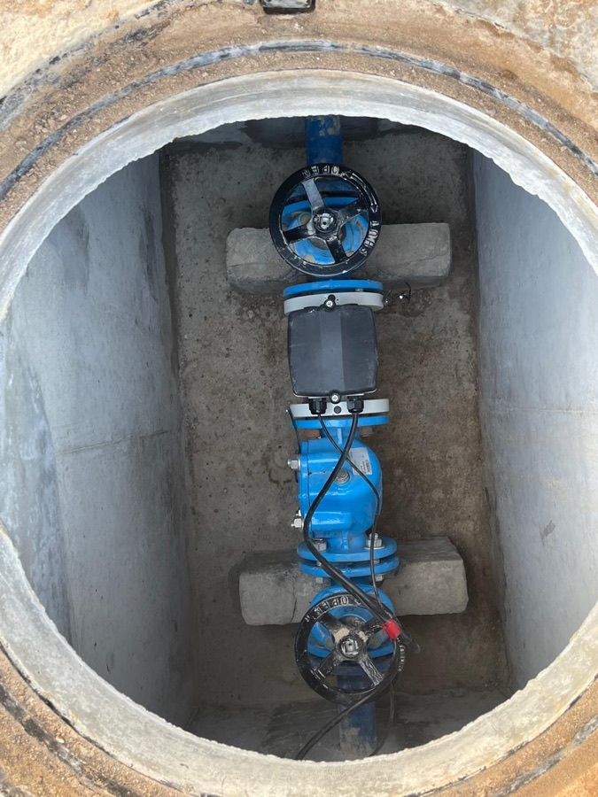
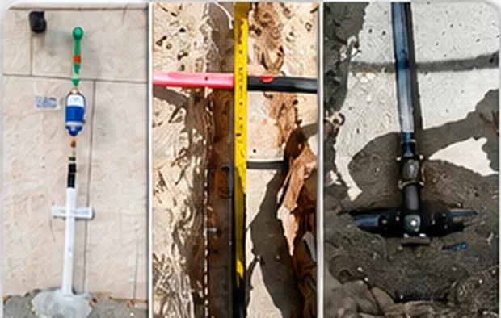
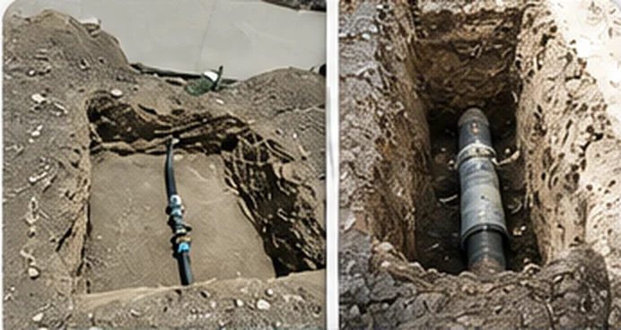

Water Infrastructure
- HDPE, MDPE, uPVC and GI pipelines
- Main lines, distribution and house connections
- Metering, valves and chamber works
- Pressure testing, disinfection and commissioning
Integrated utility services for water, wastewater, chambers, civil networks, fiber optic and telecommunication infrastructure.

Visitors can immediately understand that AFQ manages utility projects with structure, safety awareness and handover discipline.






Our teams coordinate site access, approvals, safety controls, manpower, equipment, testing and final reinstatement to support smooth project delivery.
Useful information for contractors, developers and facility teams looking for infrastructure support in Oman.
We support water pipelines, wastewater networks, chamber works, treated water connections, civil utility reinstatement, fiber optic cabling and telecom infrastructure works.
Yes. The Infrastructure team can review project scope, drawings, site requirements and timelines before preparing a quotation or response.
AFQ AL ASMAH NATIONAL is based in Al Seeb Al Jadidah, Al Seeb, Muscat Governorate and supports infrastructure requirements across Oman, with regional coordination available for GCC opportunities.
Use the Request Quotation button or contact the Infrastructure team directly at aneesh@afqalasmah.com or +968 9892 8787.
aneesh@afqalasmah.com · +968 9892 8787